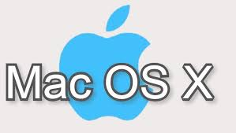
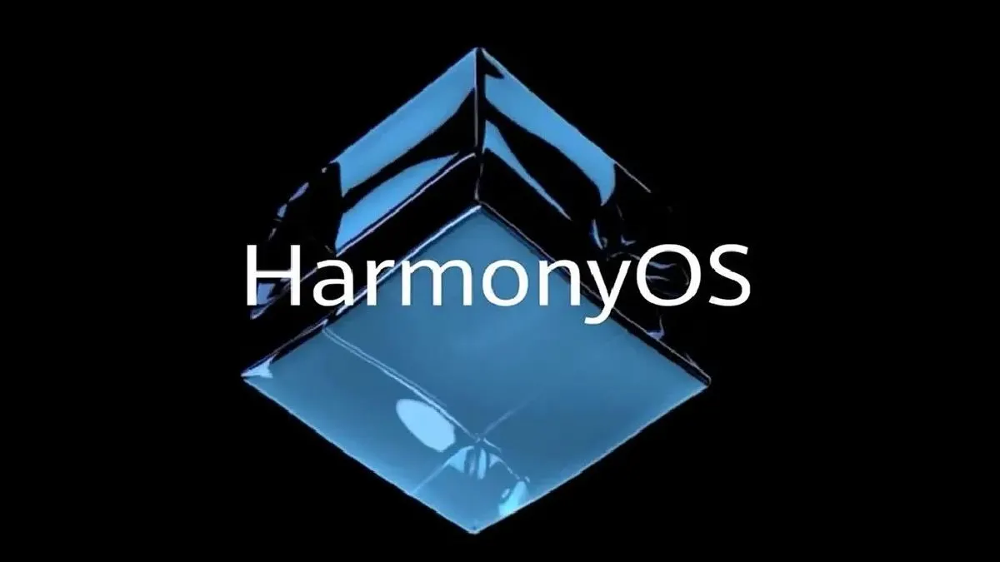

Android
Cualquier persona puede acceder al código fuente, lo que permite modificaciones y mejoras.
Puede ser utilizado en una variedad de dispositivos, desde servidores hasta dispositivos IoT.
Diseño seguro y robusto, con un enfoque en la prevención de ataques y la estabilidad.

iOS
Solo disponible en dispositivos Apple, lo que crea un ecosistema cerrado.
Fuerte enfoque en la seguridad, con características como Face ID y Touch ID.
Experiencia de usuario fluida y optimizada, con transiciones rápidas y sin problemas.

S.O HARMONY OS
Interfaz gráfica de usuario (GUI) familiar, fácil de usar y personalizable.
Amplia compatibilidad con software y juegos, gracias a su popularidad y larga historia.
Recibe actualizaciones regulares que mejoran la seguridad y el rendimiento del sistema.